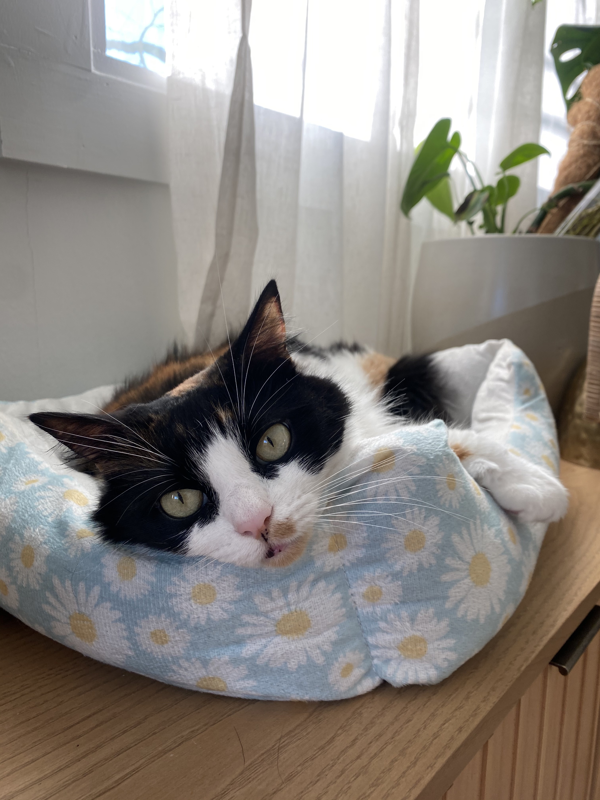

WHAT I DID LAST WEDNESDAY
I have an absurd amount of animals, so on my days I am not commuting to school, I spend time home working with my pets. Let me introduce you to the first born and unsaid favorite. The Matriach of the family is my 6 year old calico, Mama Kitty. She goes by many names and responds to none of them. We are simply living in her world that she allows us to serve her in. Loves: herself, cuddles (only when she allows), dog beds, and catnip.
Image Collection
